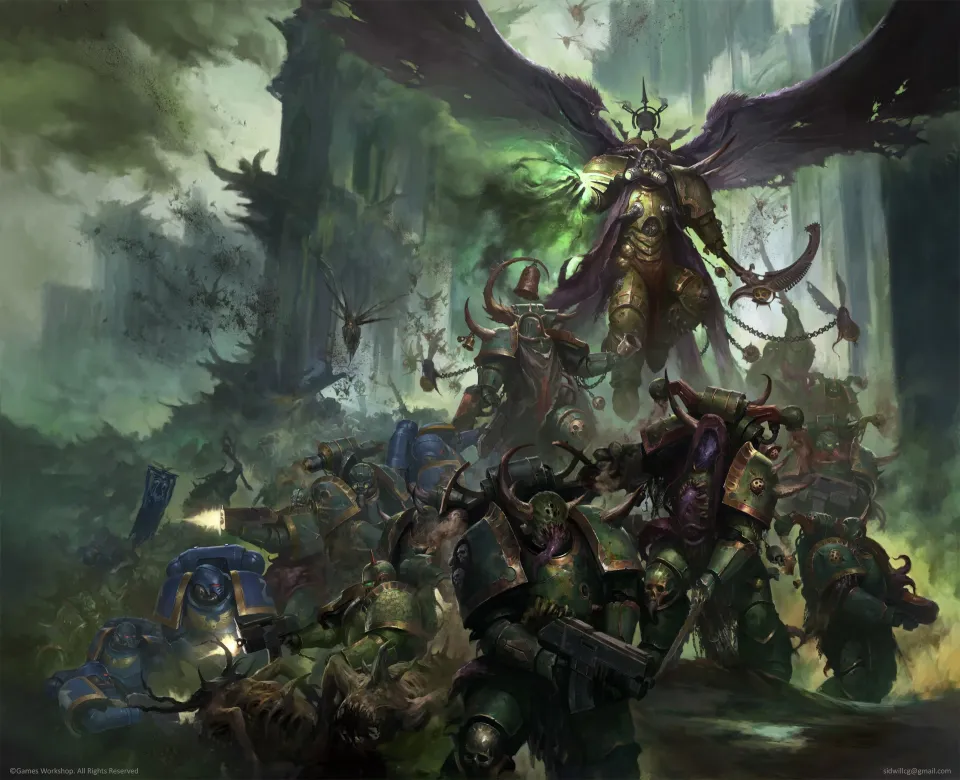
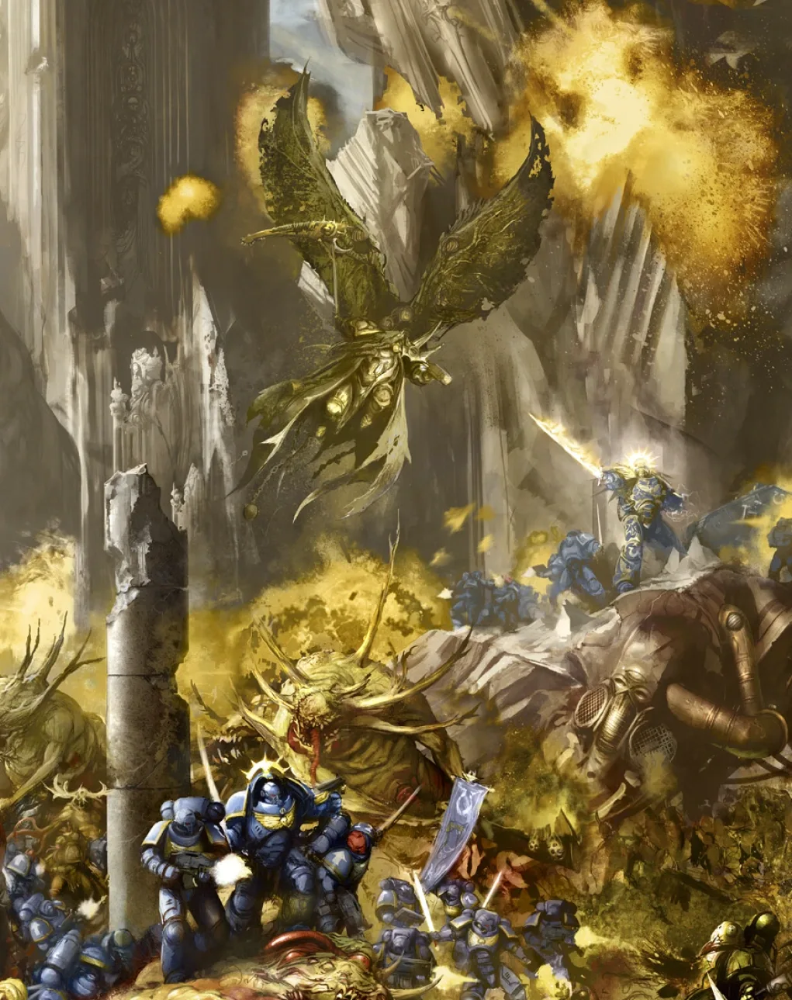
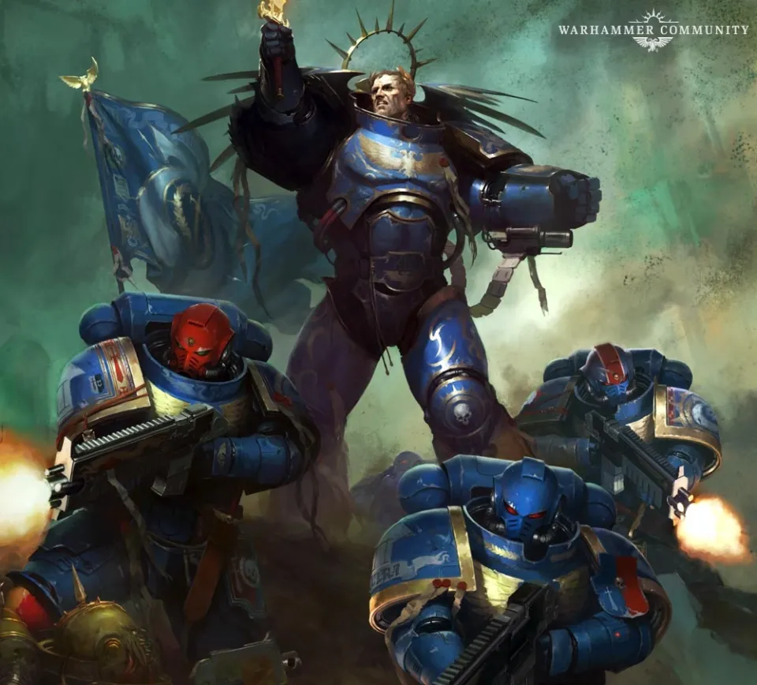

01ภาพรวม
Ultramar หรือ "500 ดาว" ของ Ultramarines คืออาณาจักรที่ถูกบริหารดีที่สุดในจักรวรรดิ — เป็นระเบียบ อุดมสมบูรณ์ และปกป้องอย่างแน่นหนา สำหรับ Nurgle เทพแห่งโรคภัยและความเน่าเปื่อย มันคือรางวัลที่หอมหวานที่สุด เพราะการเปลี่ยนสิ่งที่สมบูรณ์แบบให้เน่าเปื่อยคือชัยชนะที่ยิ่งใหญ่
ผู้ที่นำทัพของ Nurgle คือ Mortarion Daemon Primarch ของ Death Guard — พี่น้องของ Guilliman ที่ตกเป็นของ Chaos ตั้งแต่ยุค Horus Heresy สงครามนี้เรียกว่า Plague Wars (เพลก วอร์ส)
02War of Flies: สงครามแมลงวัน
หลัง Great Rift เปิด Death Guard เริ่มโจมตี Ultramar แบบต่อเนื่อง ตั้งแต่ Talassar ถึง Iax, Espandor, Circe และ Laphis บางครั้งเป็นแค่หน่วยเล็กที่แอบปล่อยเชื้อโรคหรือทำพิธีกรรม บางครั้งเป็นการบุกเต็มรูปแบบ ชื่อ "War of Flies" มาจากแมลงวันตัวอ้วนที่ตามมากับกองทัพของ Nurgle ทุกที่
อาวุธที่โหดร้ายที่สุดคือโรคซอมบี้ — ผู้ป้องกันต้องยิงศพของเพื่อนร่วมรบและครอบครัวที่ลุกขึ้นเดินกลับมา โรคร้ายของ Nurgle ฆ่าคนได้มากกว่าอาวุธทั้งหมดรวมกัน

03Iax: ดาวโรงพยาบาล
Iax เคยถูกเรียกว่า "สวนแห่ง Ultramar" เป็นดาวเกษตรที่อุดมสมบูรณ์ที่สุดดวงหนึ่ง ขณะที่ Guilliman ยังอยู่ใน Indomitus Crusade เขาสั่งให้ Iax เป็น ดาวโรงพยาบาล รับผู้ป่วยและผู้บาดเจ็บจากทั่ว Ultramar ด้วยระบบกักกันโรคที่เข้มงวดหลายชั้น — คัดแยกตามชนิดโรค ความรุนแรง ทั้งกาย ใจ และวิญญาณ ตรวจซ้ำสามรอบก่อนให้ลงดาว
สำหรับ Nurgle ดาวที่พยายาม "ต่อต้านของขวัญ" ของเขาคือการดูหมิ่น แม้จะระวังเพียงใด ทหารเจ็ดคนก็ถูก Nurgle ประทับตราไว้ผ่านแผลเล็ก ๆ หรือแม้แต่แมลงวันกัด คืนหนึ่งทั้งเจ็ดถูกดึงไปที่ทะเลสาบลับ ร่างกายกลายพันธุ์จนตาย และความตายนั้นเปิดประตูสู่ Garden of Nurgle เรือขนาดยักษ์เจ็ดลำที่สร้างจากซากวาฬอวกาศบินออกมา นำโดย Ku'gath the Plaguefather Great Unclean One
04Guilliman กลับบ้าน
Guilliman กลับมา
เมื่อระยะแรกของ Indomitus Crusade จบลง Guilliman นำกำลังเสริมกลับ Ultramar ด้วยตัวเอง
ตีกลับฝ่าย Nurgle
Guilliman ตีกองทัพของ Mortarion แตกพ่ายที่ Espandor และ Parmenio ในปฏิบัติการที่ถูกเรียกว่า "Spear of Espandor"
พี่น้องเผชิญหน้า
Mortarion ถอยไปรวมกับ Ku'gath บน Iax Guilliman ตามไปและดวลกับพี่ชายเป็นจุดสูงสุดของสงคราม และเช่นเดียวกับครั้งก่อน ทั้งสองไม่มีใครเอาชนะใครได้
ระเบิดไวรัส
ก่อนถอย Mortarion จุดระเบิดไวรัสที่กวาดล้างชีวิตทั้งหมดบน Iax ดาวสวนกลายเป็น Death World ไร้ชีวิต


05จุดจบและผลที่ตามมา
Plague Wars จบลงไม่ใช่เพราะฝ่าย Nurgle พ่ายแพ้อย่างสิ้นเชิง แต่เพราะเทพ Chaos องค์อื่นฉวยโอกาสบุกดินแดนของ Nurgle ที่ชื่อ Scourge Stars ใน "Great Game" ที่เทพทั้งสี่แข่งขันกัน Nurgle จึงต้องเรียกกองทัพกลับไปป้องกันบ้านของตัวเอง
- Ultramar รอดแต่บอบช้ำ — หลายดาวถูกทำลาย ผู้คนตายนับสิบล้าน และคำว่า "Ultramar ที่สมบูรณ์แบบ" ไม่มีอีกแล้ว
- คำสาบานแก้แค้น — Guilliman สาบานว่า Death Guard จะต้องชดใช้สิ่งที่ทำกับ Ultramar สิบเท่า
- War in the Rift — สงครามย้ายไปสู่ภูมิภาครอบ Great Rift
นิยายชุด Dark Imperium (2017–2018) เล่าว่า Indomitus Crusade กินเวลาราวร้อยปีและจบด้วย Plague Wars แต่ในปี 2021 Black Library ปรับเนื้อเรื่องใหม่ให้ระยะแรกของสงครามครูเสดกินเวลาเพียง 12 ปี Plague Wars จึงถูกย้ายมาอยู่ราว 012.M42 แทน 111.M42 ที่บางแหล่งยังใช้อยู่
06แหล่งข้อมูลและหมายเหตุ
เนื้อหาหน้านี้สรุปและแปลเป็นภาษาไทยจากบทความใน Warhammer 40k Wiki (Fandom) ซึ่งเรียบเรียงจากหนังสือ Codex, หนังสือชุด Horus Heresy ของ Forge World และนิยาย Black Library ด้านล่างนี้ (ตรวจสอบ ต.ค. 2026)
เนื้อเรื่อง Warhammer ถูกเขียนเพิ่มและแก้ไขมาตลอดหลายสิบปี ปี จำนวน และรายละเอียดบางจุดต่างกันไปตามหนังสือแต่ละเล่ม หน้านี้ใช้ฉบับที่แหล่งอ้างอิงส่วนใหญ่ยอมรับ และบอกไว้เมื่อมีหลายฉบับ